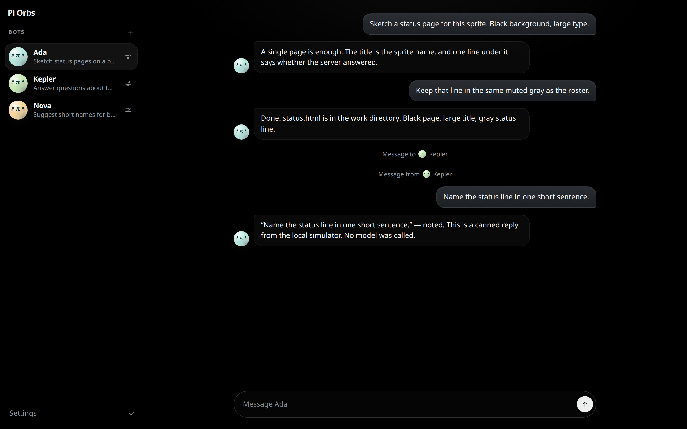

A Pi thread per bot
Each bot is its own Pi conversation. The first bot is selected on load. Name a bot and choose Add.
Named Pi bots on one shared Fly.io Sprite — install the client, it deploys the server.
npx pi-orbs
Named bots, each one a durable Pi thread, sharing one Fly.io Sprite as their computer.
Each bot is its own Pi conversation. The first bot is selected on load. Name a bot and choose Add.
They share one Fly.io Sprite, including /home/sprite/work. The thread refreshes every few seconds.
What you install is the client. It keeps the Sprite list, creates bots, and pushes a server build onto a Sprite when you ask it to.
Install the client and deploy a Sprite, or review the same UI on this machine with no Sprite and no key.
01
npx pi-orbsYou need Node 20 or newer, and the sprite CLI installed and logged in. Open http://127.0.0.1:8787.
Until a sprite is running, the page shows only the setup form: a sprite name, an xAI key, and Create and deploy. That creates the Sprite, makes its URL public, stores the key in a Sprites connector named pi-orbs xAI, and installs the server. The xAI key is not copied into the sprite service environment.
02
npm install --prefix client
npm run dev:localFrom a checkout of this repo. npm run dev:local builds the client and serves the same UI at http://127.0.0.1:8787 against an in-memory simulator. No sprite CLI and no xAI key.
The setup form stays hidden. The roster opens with three bots — Ada, Kepler, and Nova — on a pretend sprite named atlas, and the selected thread already has messages. Send a message and the simulator appends your text plus a canned reply. Local mode leaves ~/.pi-orbs/state.json untouched.
The roster, the thread, and a canned reply. Sprite create, deploy, and destroy stay outside this mode, along with the xAI connector and Pi itself.


